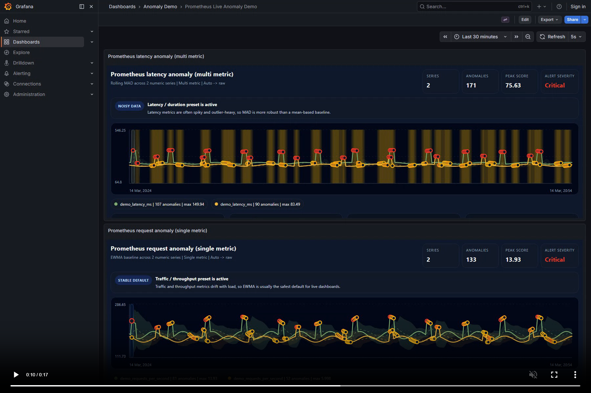
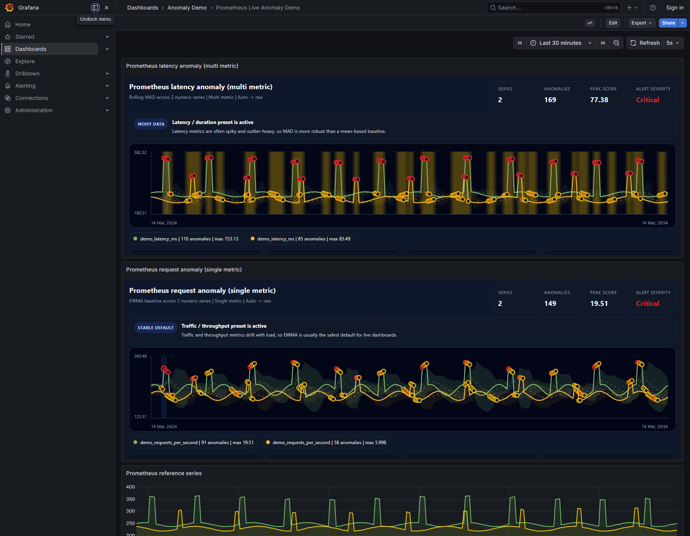
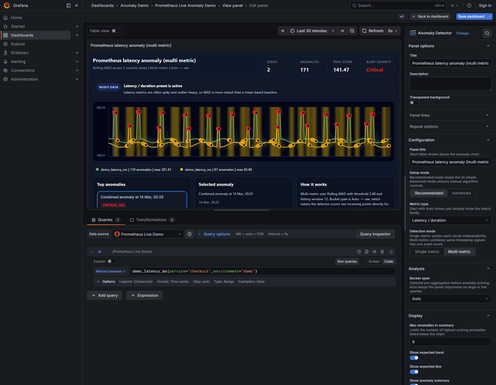
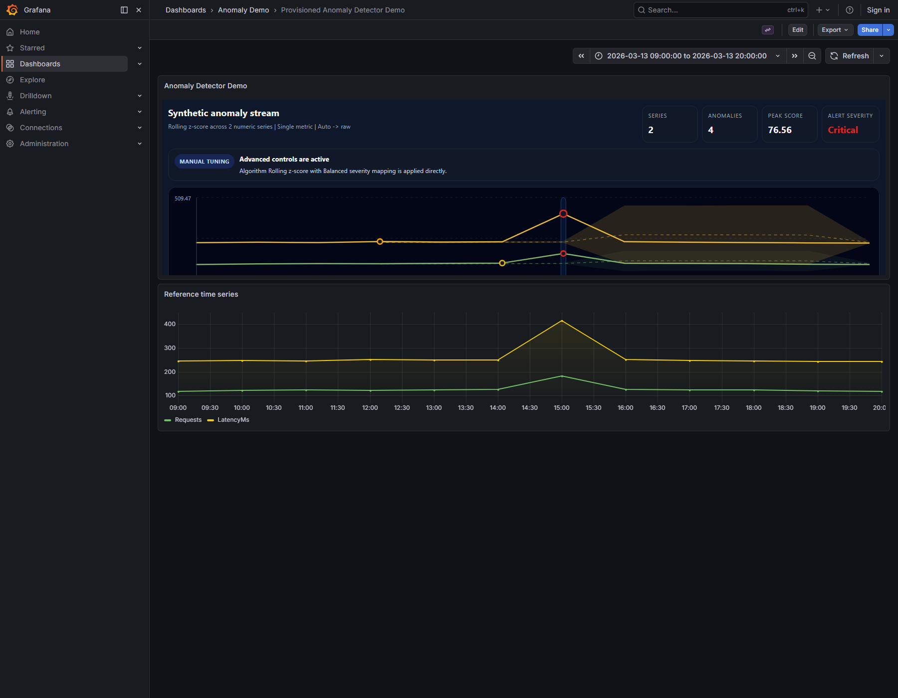
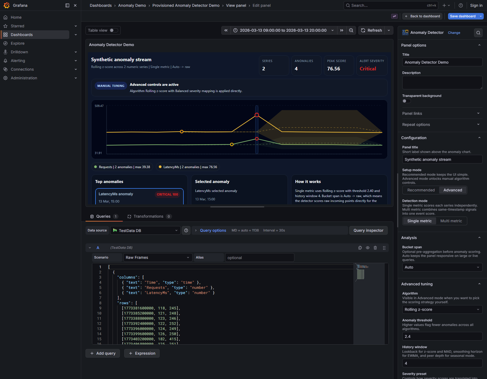
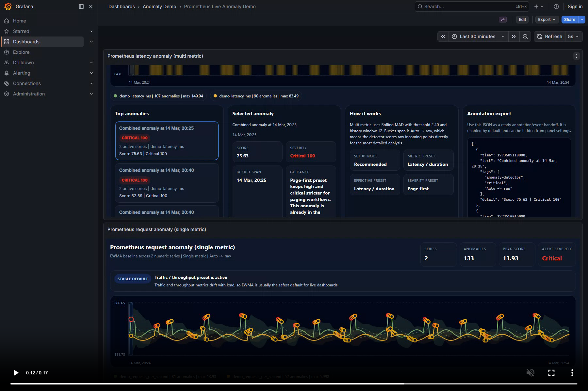

Bu doküman, plugin'in son hâline göre baştan hazırlanmıştır. Amaç yalnızca panelin nasıl açıldığını göstermek değil; dashboard üstünde gördüğün her kartın, her değerin, her butonun ve Prometheus anomaly score feed akışının ne anlama geldiğini görsellerle birlikte netleştirmektir.
İçerik, güncel panel kodu, release paketleri, canlı Prometheus demo ekranları, TestData örnekleri ve tutorial video dosyası üzerinden hazırlanmıştır.
Bu plugin bir Grafana panel plugin'idir. Panel; Prometheus, TestData veya Grafana'nın desteklediği başka bir datasource üzerinden gelen sayısal time series verisini alır, seçili algoritmaya göre beklenen davranışı hesaplar ve sapmayı anomaly skoru olarak görselleştirir.
Kullanıcının ilk anda algoritma seçmek zorunda kalmaması hedeflenir. Bu yüzden plugin iki seviyeli çalışır:
Anomaly Demo klasörüne girPrometheus Live Anomaly Demo dashboard'unu açTop anomalies ve Selected anomaly kartlarını okuSetup mode = Recommended, Metric type = Auto, Bucket span = Auto ile başla. Sonuç tatmin etmiyorsa Advanced moda geç.

| Alan | Ne söyler? | Neden önemlidir? |
|---|---|---|
| Series | İşlenen sayısal seri sayısı | Multi metric panelde kapsama alanını verir |
| Anomalies | Eşik aşan anomaly sayısı | Panelin ne kadar problemli olduğunu hızlı gösterir |
| Peak score | En yüksek score | En kötü olayın gücünü verir |
| Alert severity | Peak score'dan türetilen severity etiketi | Triage sırasını belirlemede en hızlı sinyaldir |
| Öğe | Anlamı |
|---|---|
| Ana çizgi | Gerçek metric serisi |
| Expected line | Algoritmanın beklediği merkez davranış |
| Expected band | Normal kabul edilen aralık |
| Anomaly marker | Threshold'u aşan single metric noktası |
| Event band | Multi metric modda birleşik anomaly penceresi |
| Legend | Her seri için anomaly count ve max score özeti |

Recommended mod, ilk kurulum ve günlük kullanım için en ergonomik yoldur. Kullanıcı teknik olarak algoritma düşünmeden iyi bir başlangıç sonucu alır.
| Preset | Seçilen algoritma | Sensitivity | History | Severity preset |
|---|---|---|---|---|
| Traffic / throughput | EWMA | 2.1 | 14 | Warning first |
| Latency / duration | MAD | 2.4 | 12 | Page first |
| Error rate | MAD | 2.6 | 18 | Page first |
| Resource usage | EWMA | 2.3 | 18 | Balanced |
| Business KPI | Seasonal | 2.4 | 10 | Balanced |


Advanced mod, preset mantığını baypas eder. Artık plugin senin için karar vermez; doğrudan senin seçtiğin detection algoritması ve severity mapping uygulanır.
Auto yanlış preset seçiyorsa
Bu gorunum, panelin son halindeki ozet akislarini tek karede gosterir. Sol tarafta oncelikli olay listesi vardir, ortada secili olay triage detayi acilir, sag tarafta ise ayni baglam annotation veya handoff JSON'una donusur.
| Alan | Ne ifade eder? |
|---|---|
| Title | Seri veya birlesik event adi |
| Severity badge | Severity etiketi ve numerik severity score |
| Subtitle | Zaman, bucket veya etkilenen seri ozeti |
| Detail | Actual, expected, deviation veya etkilenen seri sayisi gibi kisa operasyon cumlesi |
| Alan | Ne ifade eder? |
|---|---|
| Score | Secili anomaly'nin anlik skoru |
| Severity | Low / Medium / High / Critical etiketi ve severity score |
| Bucket span | Olayin ait oldugu zaman penceresi |
| Guidance | Severity preset'e gore yazilmis operasyon onerisi |
| Actual | Gercek gozlenen deger |
| Expected | Algoritmanin bekledigi merkez deger |
| Deviation | Gercek ile beklenen arasindaki mutlak fark |
| Deviation % | Beklenen degere gore yuzdesel sapma |
| Expected range | Normal kabul edilen alt ve ust band |
| Samples in bucket | O bucket'a dusen ham ornek sayisi |
Multi metric event secildiginde alttaki detay alanina seri bazli kirilim gelir ve her seri icin Actual / Expected / Deviation / Score kolonlari ayrica gosterilir.
Copy annotation JSON ve Create annotation secili tek olaya calisir. Operational exports altindaki Annotation export ise ozet listesini JSON array olarak verir.| Buton | Ne yapar? |
|---|---|
| Copy annotation JSON | Selected anomaly uzerinden secili tek olay icin annotation payload'ini panoya kopyalar |
| Create annotation | Secili anomaly payload'ini Grafana API ile gercek annotation olarak yazar; dashboard kayitli olmali |
| Sync score feed | Panel tanimini exporter endpoint'ine gonderir ve alert-ready Prometheus rule kayitlarini uretir |
| Show score rules | Sync edilmis her rule icin alert query ve per-series drilldown query bloklarini acar |
| Copy alert query | Prometheus score feed kartindaki rule bazli alert query'sini kopyalar |
| Copy series query | Ayni rule icin seri bazli drilldown query'sini kopyalar |
| Show exports / Hide exports | Operational exports alanini acar veya kapatir |
| Copy JSON | Summary tabanli Annotation export JSON'unu kopyalar |
| Copy query | Alert rule export icindeki Grafana Alerting'e hazir PromQL'i kopyalar |
| Ayar | Degerler | Aciklama |
|---|---|---|
| Setup mode | Recommended / Advanced | Preset tabanli kullanim mi, manuel tuning mi oldugunu belirler |
| Metric type | Auto / Traffic / Latency / Error rate / Resource usage / Business KPI / Custom | Recommended modun ana giris sinyalidir |
| Detection mode | Single metric / Multi metric | Tek seri marker'i mi, ayni zamandaki sinyallerden birlesik event mi uretilecegini belirler |
| Score feed mode | Off / Manual sync / Auto sync | Prometheus score feed kartinin calisma seklini belirler |
| Exporter endpoint | URL | Browser'in erisecegi exporter adresi. Varsayilan tipik deger http://127.0.0.1:9110 |
| Rule name prefix | Metin | Uretilen Prometheus rule isimlerinin basina kisa bir onek ekler |
| Bucket span | Auto / Raw / 1m / 5m / 15m / 1h | Anomaly scoring oncesi istege bagli pre-aggregation uygular |
| Algorithm | Rolling z-score / Rolling MAD / EWMA baseline / Seasonal baseline | Advanced modda kullanilacak scoring stratejisini secer |
| Anomaly threshold | Numerik deger | Yuksekse daha az anomaly cikar, dusukse daha hassas olur |
| History window | Numerik deger | Z-score ve MAD icin lookback, EWMA icin smoothing, seasonal icin peer derinligini belirler |
| Season length (samples) | Numerik deger | Cycle-based seasonal modda donem uzunlugunu sample cinsinden verir |
| Seasonal refinement | Cycle only / Hour of day / Weekday + hour | Seasonal karsilastirmanin baglamini secmeye yarar |
| Severity preset | Warning first / Balanced / Page first | Severity esitlerini ve guidance tonunu belirler |
| Max anomalies in summary | 3-20 arasi | Top anomalies listesinde gosterilecek ust olay sayisini sinirlar |
| Show expected band | On / Off | Beklenen aralik gorselini acar veya kapatir |
| Show expected line | On / Off | Beklenen merkez cizgisini gosterir veya gizler |
| Show anomaly summary | On / Off | Top anomalies, Selected anomaly ve How it works kartlarini acip kapatir |
| Show export blocks | On / Off | Operational exports alaninin render edilip edilmeyecegini belirler |
| Preset | Low | Medium | High | Critical | Onerilen alert esigi |
|---|---|---|---|---|---|
| Warning first | 35 | 55 | 72 | 88 | 60 |
| Balanced | 40 | 60 | 75 | 90 | 70 |
| Page first | 45 | 65 | 82 | 95 | 75 |
Plugin'in son halindeki en kritik operasyon akisi budur. Panel sadece anomaly cizmez; ayni panel tanimini exporter'a sync eder, exporter bu tanima gore Prometheus tarafinda alert-ready score metric uretir ve Grafana Alerting bunlari normal Prometheus metrigi gibi tuketir.
Prometheus score feed karti sync ve rule gorunurlugu icindir. Operational exports alani ise insanlarin kopyalayacagi annotation JSON ve alert taslaklarini verir. Ikisi ayni amaca hizmet eder ama ayni sey degildir.| Alan | Ne gosterir? | Ne zaman kullanilir? |
|---|---|---|
| Status badge | Ready, Syncing, Synced, Action needed, Error, Off | Sync'in son durumunu tek bakista okumak icin |
| Sync score feed | Panel tanimini exporter'a hemen yollar | Manual sync modunda veya save beklemeden kural yayinlamak istediginde |
| Mode | Off, Manual sync, Auto sync | Bu panelin exporter ile nasil haberlestigini anlamak icin |
| Rules | Exporter'a kaydolmus rule sayisi | Panelin kac ayri alert-ready kural urettigini gormek icin |
| Last sync | Son basarili sync zamani veya Not synced yet | Kurallar gercekten guncellendi mi kontrol etmek icin |
| Alert metric | Rule hazirsa grafana_anomaly_rule_score, degilse Waiting for sync | Grafana Alerting'de hangi metriği kullanacagini anlamak icin |
| Show score rules | Kayitli rule listesini, alert query'lerini ve per-series query'leri acar | Alert editorune kopyalanacak PromQL'i gormek icin |
| Mod | Ne yapar? |
|---|---|
| Off | Score feed akislarini tamamen kapatir; panel analiz eder ama exporter ile konusmaz |
| Manual sync | Kullanici Sync score feed butonuna bastiginda rule publish eder |
| Auto sync | Kaydedilmis dashboard tanimini baz alir ve kisa araliklarla Prometheus score rule'larini guncel tutar |
| Alan | Aciklama |
|---|---|
| Rule name | Exporter'in bu panel icin kaydettigi kural adi |
| Alert rule query | Grafana Alerting icin kopyala-yapistir hazir PromQL |
| Per-series drilldown query | Pod, instance veya label bazinda hangi serinin alarmi tasidigini gosteren query |
| Copy alert query | Rule-level aggregate score query'sini kopyalar |
| Copy series query | Ayni rule icin seri bazli drilldown query'sini kopyalar |
Bu kisim, alert'i tek rule seviyesinde tutup drilldown'i ancak gerekince acmak isteyen operasyon akisi icin cok kullanislidir.
| Metric | Ne ise yarar? |
|---|---|
grafana_anomaly_rule_score | Rule seviyesinde 0-100 arasi aggregate score. Alerting icin en pratik metrik budur |
grafana_anomaly_score | Seri seviyesinde normalize anomaly score |
grafana_anomaly_score_raw | Algoritmanin ham skoru; daha ileri tuning ve inceleme icin yararlidir |
grafana_anomaly_is_anomaly | Threshold asilmis ise 1 doner |
| Cikti | Kapsam | Kullanim |
|---|---|---|
| Copy annotation JSON | Secili tek anomaly | Secili olayi tek annotation payload'i olarak panoya almak icin |
| Create annotation | Secili tek anomaly | Grafana'ya gercek annotation yazmak icin |
| Annotation export | Top anomalies ozeti | Birden fazla ozet olayi JSON array olarak incident/handoff akisina vermek icin |
| Alert rule export | Secili anomaly + score feed durumu | Grafana Alerting'de kullanilacak query, threshold ve guidance taslagini hazir vermek icin |
grafana_anomaly_rule_score{rule="checkout_latency_panel"}
max_over_time(grafana_anomaly_rule_score{rule="checkout_latency_panel"}[5m])
max(max_over_time(grafana_anomaly_rule_score{rule=~"checkout_latency_panel|checkout_error_rate_panel"}[5m]))
grafana_anomaly_score{rule="checkout_latency_panel"}
grafana_anomaly_score_raw{rule="checkout_latency_panel"}
grafana_anomaly_is_anomaly{rule="checkout_latency_panel"}
global: prometheus_url: http://host.docker.internal:9090 evaluation_interval_seconds: 10 request_timeout_seconds: 10 listen_host: 0.0.0.0 listen_port: 9110 config_reload_interval_seconds: 10 rules: []
Bu config'te mantik basittir: exporter Prometheus API'sine gider, dinamik rule setine gore skoru uretir ve kendi /metrics endpoint'inde Prometheus formatinda servis eder.
max_over_time(grafana_anomaly_rule_score{rule="..."}[5m]) ifadesidir.alpas-anomalydetector-panel-plugin-only.zip
RHEL / Linux hızlı kurulum:
cd plugin-only sudo ./install-rhel-plugin.sh
Bu script:
/var/lib/grafana/plugins/alpas-anomalydetector-panel altına kopyalarallow_loading_unsigned_plugins ayarını eklergrafana-server servisini yeniden başlatırcd alert-bundle sudo ./install-exporter-rhel.sh http://127.0.0.1:9090 sudo ./enable-local-prometheus-scrape-rhel.sh
Remote Prometheus senaryosunda:
sudo EXPORTER_LISTEN_HOST=0.0.0.0 ./install-exporter-rhel.sh http://prometheus.example.internal:9090
Ardından remote Prometheus tarafına scrape job eklenir:
- job_name: grafana-anomaly-exporter
scrape_interval: 10s
static_configs:
- targets:
- grafana-host.example.internal:9110
Score feed mode alaninin Manual sync veya Auto sync oldugunu dogrulaSync score feed butonuna basPrometheus score feed kartinda Rules > 0 ve status'un Synced ya da en azindan Ready oldugunu kontrol etShow score rules veya Operational exports > Alert rule export alanini acCopy query ile panelin urettigi PromQL'i kopyalaAlerting -> Alert rules -> New alert rule ekranina git ve datasource olarak mevcut Prometheus'u secPer-series drilldown query akisini ac.| Alan | Onerilen deger | Neden? |
|---|---|---|
| Datasource | Prometheus | Score metric exporter tarafindan Prometheus formatinda sunulur |
| Query A | max_over_time(grafana_anomaly_rule_score{rule="checkout_latency_panel"}[5m]) | Tek rule icin en stabil aggregate score ifadesidir |
| Condition | WHEN QUERY IS ABOVE 60 / 70 / 75 | Severity preset'e gore warning-first, balanced veya page-first esigi secilir |
| For | 2m | Kisa spike'lari eleyip daha anlamli anomaly'leri ayiklar |
| Evaluate every | 30s | Export taslagiyla uyumlu varsayilan degerdir |
| No data state | NoData | Export taslaginin varsayilanidir |
| Execution error state | Alerting | Export taslaginin varsayilanidir |
| Alan | Ne anlama gelir? |
|---|---|
| title | Secili anomaly'nin basligi; alert aciklamasi icin baslangic noktasi verir |
| score_feed_ready | Prometheus score rule'larinin gercekten sync edilip edilmedigini soyler |
| paste_into | Bu query'nin nereye yapistirilacagini gosterir; varsayilan olarak Grafana Alerting query editoru |
| prometheus_query | Kopyalanacak PromQL ifadesi |
| grafana_condition | WHEN QUERY IS ABOVE ... satirinin hazir taslagi |
| for | Alert'in kac sure boyunca devam eden durumu bekleyecegi |
| evaluate_every | Grafana'nin query'yi kac saniyede bir degerlendirecegi |
| no_data_state | Query bos donerse rule'un nasil davranacagi |
| exec_err_state | Query hata verirse rule'un nasil davranacagi |
| threshold | Secili severity preset'ten gelen onerilen score esigi |
| synced_rules | Bu panel adina exporter'a kayitli rule isimleri listesi |
| rule_scope | Query'nin tek rule mu, yoksa birden fazla sync edilmis rule'un max birlesimi mi oldugunu aciklar |
| mode | Detection mode'un single veya multi oldugunu verir |
| algorithm | Secili scoring algoritmasi |
| bucket_span | Alert'e konu olan panelin bucket span ayari |
| history_window | Skorlama tarafinda kullanilan lookback / smoothing penceresi |
| severity_preset | Warning first / Balanced / Page first profili |
| selected_severity | Secili anomaly'nin severity etiketi |
| selected_score | Secili anomaly'nin skoru |
| guidance | Operasyon ekibine insan dilinde verilmis yonlendirme notu |
Baslangicta rule-level alert ile ilerlemek en saglikli yoldur. Ancak gercek ihtiyac instance ya da pod bazli ise, ayni sync sonucunda gelen Per-series drilldown query akisi ikinci adim olarak acilabilir.
| Belirti | Muhtemel neden | Ne yapılmalı? |
|---|---|---|
| Plugin Grafana'da görünmüyor | Unsigned plugin izni eksik | allow_loading_unsigned_plugins ayarını kontrol et |
| Hiç anomaly görünmüyor | Threshold yüksek veya bucket span fazla büyük | Threshold'u düşür, raw/auto dene |
| Çok fazla anomaly var | Metric gürültülü ya da threshold çok düşük | MAD/EWMA dene, threshold'u artır |
| Create annotation pasif | Dashboard kayıtlı değil | Dashboard'u kaydet |
| Score feed sync olmuyor | Exporter yok, endpoint yanlış veya panel henüz kaydedilmedi | Endpoint'i doğrula, dashboard'u kaydet, tekrar sync et |
| Prometheus metric görünmüyor | Exporter scrape edilmiyor | /metrics endpoint'ini ve Prometheus target durumunu kontrol et |
grafana_anomaly_rule_score sorgulanabiliyor mu?Bu sürüm, eski tutorial'ın üzerinden yamalanmadı; panelin güncel davranışına göre baştan yazıldı. Ekran görüntüleri ve anlatım, son kullanım akışıyla hizalı olacak şekilde yeniden düzenlendi.